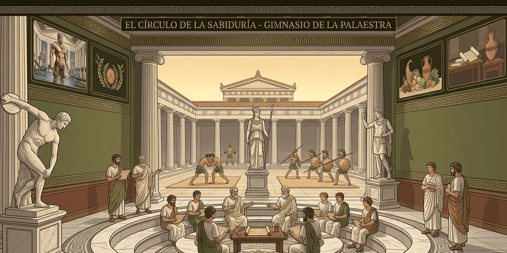
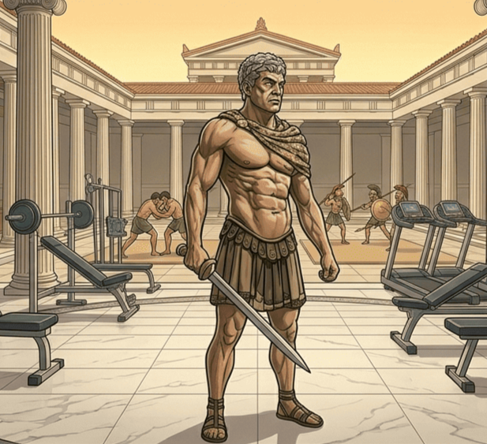
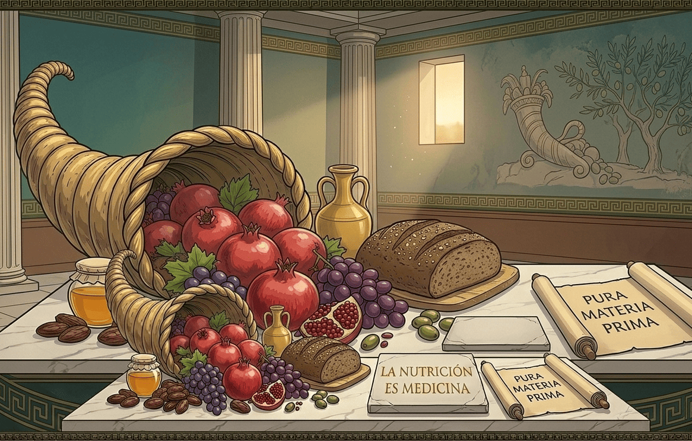
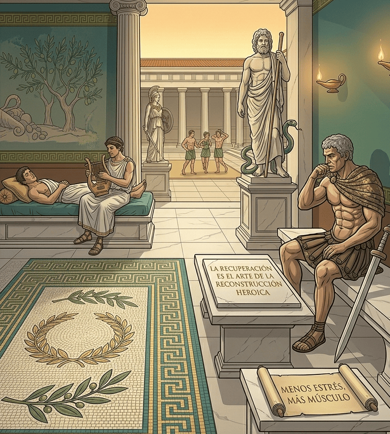

Blog
EL CIRCULO DE LA SABIDURIA
Destacado

PRINCIPIOS DE HIPERTROFIA: LA ESCULTURA DEL DORIFORO
El aumento del tamaño de las fibras musculares va mucho más allá de la simple búsqueda de una estética imponente o de esculpir un cuerpo fuerte.

IMPORTANCIA DE UNA ALIMENTACION SANA
Los atletas olímpicos de la antigüedad y los guerreros espartanos eran sumamente estrictos con su alimentación. No comían por placer o distracción, sino con un propósito claro: nutrir el templo que albergaba su mente y preparar su cuerpo para la máxima exigencia física.

GARANTIZAR EL DESCANSO Y LA RECUPERACION CÉLULAR
El músculo no crece cuando estás levantando pesas en el gimnasio, sino cuando descansas. El entrenamiento es el estímulo de ruptura; el descanso es el momento de la construcción.
GARANTIZAR EL DESCANSO Y LA RECUPERACION CÉLULAR
El músculo no crece cuando estás levantando pesas en el gimnasio, sino cuando descansas. El entrenamiento es el estímulo de ruptura; el descanso es el momento de la construcción.
Dieta
Rutina
Mediciones
Calculadora
Cerrar Sesion
Iniciar Sesion
Registrarse